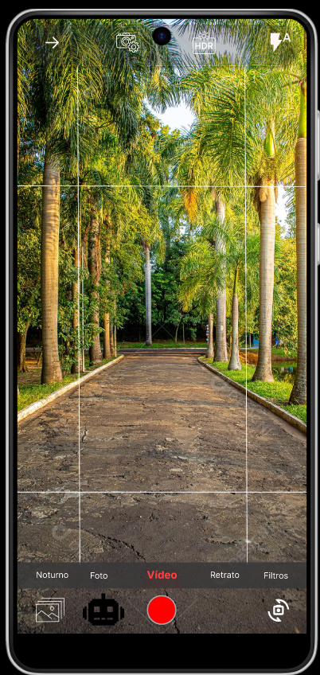

JOVI Smart Cam
Veja. Entenda. Aprenda
Veja. Entenda. Aprenda
Após a captura, o JOVI Smart Cam entra em ação como um editor inteligente. Ele analisa automaticamente a imagem, identificando elementos como iluminação, foco e composição. Com base nisso, sugere melhorias instantâneas para deixar a foto mais nítida, equilibrada e visualmente mais agradável. O usuário pode aplicar ajustes com apenas um toque, sem precisar entender de edição. A IA também reconhece o conteúdo da imagem — como pessoas, animais ou paisagens — e adapta as melhorias para cada cenário, garantindo resultados mais naturais e profissionais. Assim, cada foto capturada não é apenas registrada, mas aprimorada de forma inteligente, transformando momentos comuns em imagens de alta qualidade.


No modo vídeo, o JOVI Smart Cam atua em tempo real, analisando cada cena enquanto a gravação acontece. Ele identifica elementos do ambiente, ajusta automaticamente luz, cores e enquadramento, garantindo imagens mais estáveis e equilibradas sem esforço do usuário. Durante a gravação, a inteligência artificial também pode sugerir melhorias, destacar pontos importantes da cena e adaptar o foco conforme o movimento, tornando o vídeo mais dinâmico e profissional. Com isso, o usuário não precisa se preocupar com configurações técnicas — basta gravar, enquanto a IA cuida da qualidade, transformando qualquer momento em um conteúdo mais fluido e inteligente.
A câmera principal da JOVI Smart Cam foi projetada para capturar cada detalhe com precisão e clareza. Com uma interface limpa e intuitiva, o usuário pode focar apenas no momento, enquanto a tecnologia trabalha em segundo plano. Integrada ao sistema, a inteligência artificial analisa a cena em tempo real, identificando luz, profundidade e elementos do ambiente para ajustar automaticamente a captura. Isso garante fotos mais equilibradas, nítidas e com cores mais naturais, sem necessidade de configurações manuais. Seja em paisagens, pessoas ou objetos, a câmera entende o que está sendo fotografado e adapta o processamento para entregar o melhor resultado possível — transformando cada clique em uma imagem de alta qualidade.
Uma aliança para redefinir os limites da fotografia móvel


CONHEÇA A HISTORIA DA EMPRESA QUE IRA REVOLUCIONAR AS CAMERAS
CONHEÇA A FABRICA BRASILEIRA